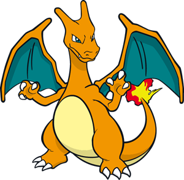
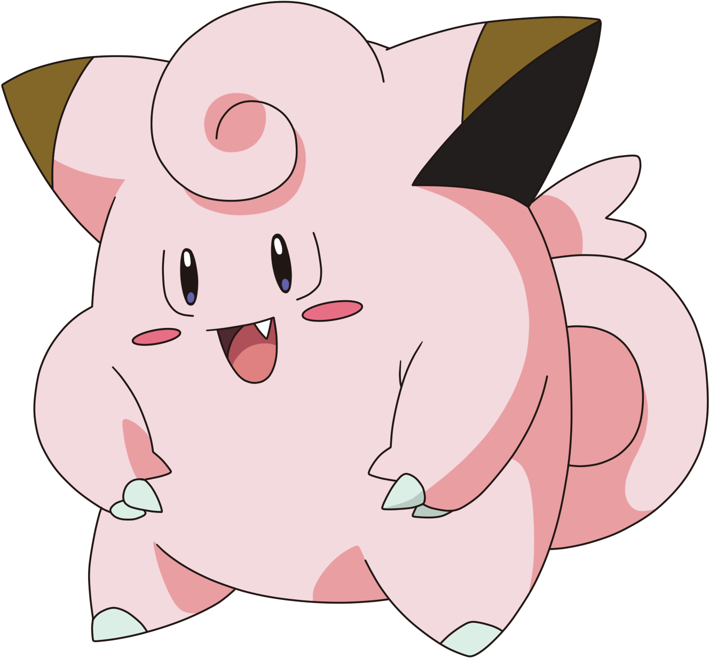

TIPO DE POKEMONES
Los Pokémon de tipo fuego basan sus ataques, principalmente, en el control de este elemento; y la mayoría pueden quemar al Pokémon oponente, mientras que ellos no sufren quemaduras.
Pokémon Tipo Fuego
Los pokemons tipo agua se sienten muy cómodos y libres en entornos donde haya agua a su alrededor. Son pokemons que pertenecen a este grupo son muy dinámicos y flexibles a adaptarse a distintas situaciones.
Pokémon Tipo Agua

El tipo roca destaca por su gran defensa frente a ataques físicos. Sin embargo, tiene en su contra que presenta varias debilidades con respecto a otros tipos, y los Pokémon de este tipo no se caracterizan por ser muy veloces.
Pokémon Tipo Roca

Es un tipo elemental ancestral, suelen ser Pokémon que cuesta capturar y/o ver, la mayoría de estos Pokémon suelen vivir en cavernas y/o lagos. La mayoría de estos Pokémon suelen ser los Pokémon legendarios.
Pokémon Tipo Dragon

Los Pokémon de tipo eléctrico tienen hábitats variados, desde bosques y praderas, hasta ciudades y centrales eléctricas.
Pokémon Tipo Electricidad

A los Pokémon de tipo planta les gusta cuidar de las flores y a los demás, pero también son grandes luchadores y son expertos en cambios de estado, pudiendo envenenar, paralizar o dormir al rival en combate.
Pokémon Tipo Planta

Este grupo de Pokémon se caracteriza por su crecimiento rápido, ya que, en general, no tardan mucho en evolucionar. Viven primordialmente en los bosques y zonas cercanas a estos.
Pokémon Tipo Insecto
El tipo normal abarca la mayor cantidad y variedad de movimientos que el resto de tipos. Gran parte de estos son movimientos que no realizan daño o no lo hacen directamente, sino que afectan a las características o estados del Pokémon.
Pokémon Tipo Normal

El tipo veneno es frecuente en Pokémon; suele encontrarse en zonas donde hay cuevas, pantanos o en sus cercanías.
Pokémon Tipo Veneno

Los Pokémon de este tipo suelen ser muy inteligentes y, a menudo, se les atribuye capacidades como prever acciones futuras, hacer levitar objetos o incluso a ellos mismos.
Pokémon Tipo Psiquico
Destacan por su gran resistencia y adaptación al medio frío o glaciar, como son las cimas de las montañas, las cavernas y cuevas heladas, o incluso los polos.
Pokémon Tipo Hielo

El tipo hada representa, principalmente, la pureza, la luz, el bien y el poder mágico, siendo esto lo más característico de esta especie.
Pokémon Tipo Hada
Este tipo de Pokémon son especialistas en el combate cuerpo a cuerpo, se podría decir que son opuestos a los del tipo psíquico, ya que, estos últimos, dependen del ataque especial.
Pokémon Tipo Lucha
Los Pokémon de este tipo tienen temor al tipo agua, igual que los de tipo roca